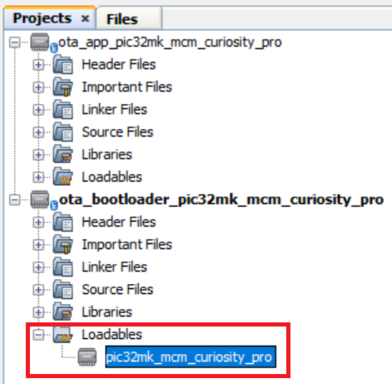
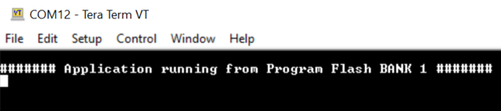

1.1.1 PIC32MK MCM Curiosity Pro Board: Building and Running the OTA Bootloader applications
Downloading and building the application
To clone or download this application from Github,go to the main page of this repository and then click Clone button to clone this repo or download as zip file. This content can also be download using content manager by following these instructions
Path of the application within the repository is apps/ble/dual_bank/
To build the application, refer to the following table and open the project using its IDE.
OTA Bootloader
| Project Name | Description |
|---|---|
| ota_bootloader/firmware/pic32mk_mcm_curiosity_pro.X | MPLABX Project for PIC32MK MCM Curiosity Pro Board |
OTA application
| Project Name | Description |
|---|---|
| ota_app/firmware/pic32mk_mcm_curiosity_pro.X | MPLABX Project for PIC32MK MCM Curiosity Pro Board |
Setting up PIC32MK MCM Curiosity Pro Board
To run the demo, the following additional hardware are required:
Short J2-1 and J2-2 using jumper in the RNBD451 Add On Board
Insert RNBD451 Add On Board board into MIKROBUS Connector J301.
Connect the Debug USB port (J500) on the board to the computer using a micro USB cable
Connect the USB to UART port (J400) on the board to the computer using a micro USB cable
Setting up the host scripts
Refer to OTA Bootloader Host Script Help for settings up python scripts which are used in order to update the application binary image
Running the Application
Open the OTA bootloader project ota_bootloader/firmware/pic32mk_mcm_curiosity_pro.X in the IDE
Make sure that the ota_app/firmware/pic32mk_mcm_curiosity_pro.X is added as a loadable project to OTA bootloader project
As the Dual Bank Flash memory may not have any valid binary required by OTA bootloader for the first time, Adding the ota_app as loadable allows MPLAB X to create a unified hex file and program both these applications in their respective memory locations based on their linker script configurations
Open the Terminal application (Ex.:Tera Term) on the computer
Connect to the Serial COM port and configure the serial settings as follows:
Baud : 115200
Data : 8 Bits
Parity : None
Stop : 1 Bit
Flow Control : None
Build and Program the OTA bootloader application using the IDE
Once programming is done OTA bootloader starts execution and directly jumps to application space to run the OTA application
LED1 starts blinking indicating that the OTA application is running
Observe the below message on console
Go to the <harmony3_path>/bootloader_apps_ota/apps/ble/dual_bank/ota_app/firmware/pic32mk_mcm_curiosity_pro.X/dist/pic32mk_mcm_curiosity_pro/production/ directory and open the command prompt to run the below command
python <harmony3_path>/bootloader_apps_ota/tools/ota_host_mcu_header.py -p 0x9D080000 -j 0x9D000200 -f pic32mk_mcm_curiosity_pro.X.production.binThis command adds OTA Host MCU Header to the application binary. If command executed successful then "image.bin is generated successfully" message display on the command prompt.
Run the below command
python <harmony3_path>/bootloader_apps_ota/tools/ota_rnbd_header.py -f image.binThis command adds OTA RNBD Header to the image.bin and generates RNBD_image.bin application binary. If command executed successful then "RNBD_image.bin is generated successfully" message display on the command prompt.
Refer Send application binary using MBD App to program RNBD_image.bin application binary to the target.
Once Firmware Update is successful
LED1 still blinking indicating that the OTA application is running
Observe the below message on console

Repeat Step 9-10.
Observe LED1 still blinking
Observe message printed on console ####### Application running from Program Flash BANK 1 ####### or ####### Application running from Program Flash BANK 2 ####### alternatively.